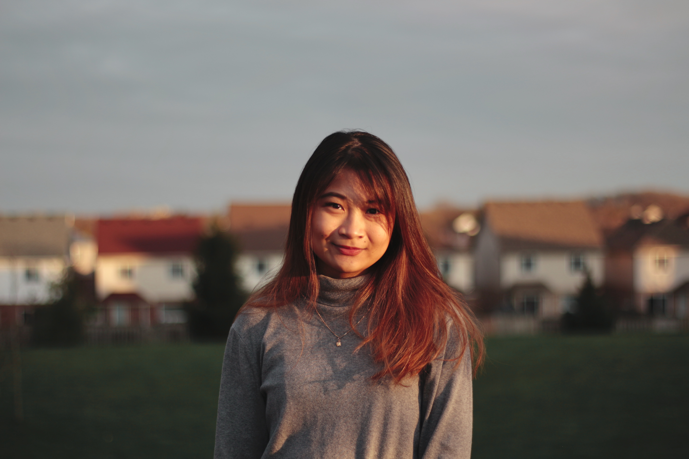

Bao Jacqueline Doan

My name is Jacqueline Doan, and I am a fourth-year student working towards an Honours Specialization B.Sc. in Mathematical and Statistical Sciences at Western University. My honours thesis is supervised by Professor Lyle Muller. My research interests are network theory and its applications, spectral theory , and differential equations. My current research is on the eigenspectra of the complete graph subjected to patterned edge removal.
For more information on my experiences, please refer to the CV tab. If you have additional questions, my email is ndoan6@uwo.ca.
Research Experience
| 2020 | NSERC - Undergraduate Student Research Awards : Supervised by Lyle Muller |
| 2019 | NSERC- Undergraduate Student Research Awards : Supervised by Lindi Wahl |
Teaching Experience
| 2020 | Calculus 1500 - Calculus I for the Mathematical Sciences : Teaching Assistant |
| 2019 | Complex Variables: The Cauchy's Integral Formula and Its Consequences |
| 2019 | Math Club at Western Outreach Event: High School Night |
| 2018-2019 | Mathnasium - The Math Learning Centre: High School Instructor |
Awards
| 2019,2020 | NSERC - Undergraduate Student Research Award |
| 2018,2019,2020 | Dean's Honour List |
| 2017 | Western Entrance Scholarship of Excellence |
| 2017 | Junior Achievement: Award of Execellence, Vice President of Marketing of The Year |
| 2016 | CEMC - Hypatia Mathematics Contest: School Champion |
Extra-Curriculars
| 2020 | Canadian Undergraduate Mathematics Conference: Speaker [ Slides ] |
| 2020 | The Interdisciplinary Contest in Modeling: Contestant [ Report ] |
| 2018-2019 | Math Club at Western: President |
| 2019 | Science Rendezvous: Volunteer | 2018-2019 | Undergraduate Society of Applied Mathematics: Communications Officer |
| 2019 | SheHacks III at Western: Delegate |
| 2017-2018 | Faculty of Information and Media Studies Student Council : Graphic Designer |
| 2017 | The Grand Theatre: Photographer |